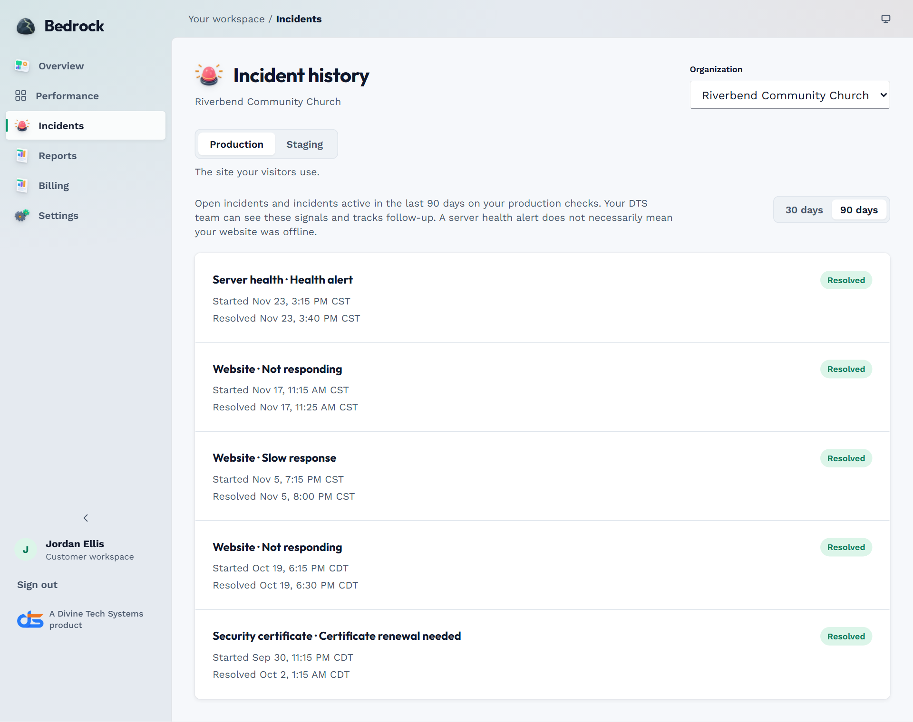

Bedrock
Incident history
An incident is a problem Bedrock’s monitoring noticed: the website not answering, answering slowly, a certificate coming up for renewal, or an alert from the server. The Incidents page lists the ones that are open and the ones that were active recently, newest first.

Reading the list
- Use 30 days or 90 days at the top right to choose how far back to look.
- Each incident shows what was affected, what kind of problem it was, when it started and when it was resolved, in your church’s time zone.
- The badge says Open or Resolved.
- If you have a staging site, the Production / Staging switch chooses whose incidents you see.
The list holds the 100 most recent incidents. If there are more, a note at the bottom says so; ask DTS for the full history.
What each kind means
| It says | What happened |
|---|---|
| Website · Not responding | A check could not reach your website. This is an outage, and it counts toward the time down on Performance. |
| Website · Slow response | The site answered, but slower than the limit DTS set, several checks in a row. Not an outage. |
| Security certificate · Certificate renewal needed | The certificate that gives your site its padlock was coming up for renewal. It opens ahead of the expiry date so there is time to renew, and resolves once the new certificate is in place. |
| Server · Not responding | A check on one of your servers, rather than the website itself, could not connect. |
| Server health · Health alert | Something on the server crossed a limit, such as processor, memory or disk use. It does not necessarily mean your website was offline. |
When an incident is open
Your DTS team sees every incident as it opens and tracks the follow-up. An open incident also shows on the Overview’s status card and in its Open incidents figure.
The list shows what monitoring observed, not why it happened. The cause, and anything DTS recommends because of it, is in your monthly report. For a question about a particular incident, give DTS its start time.